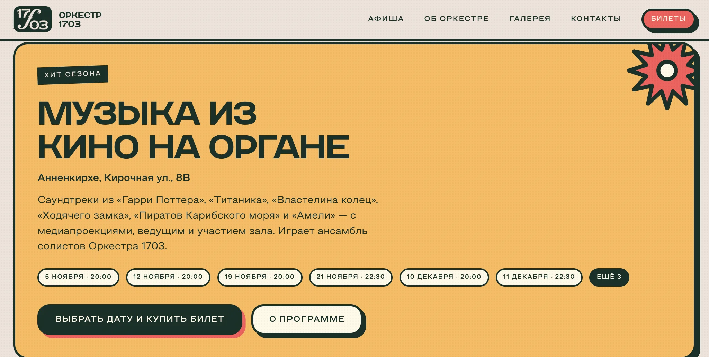
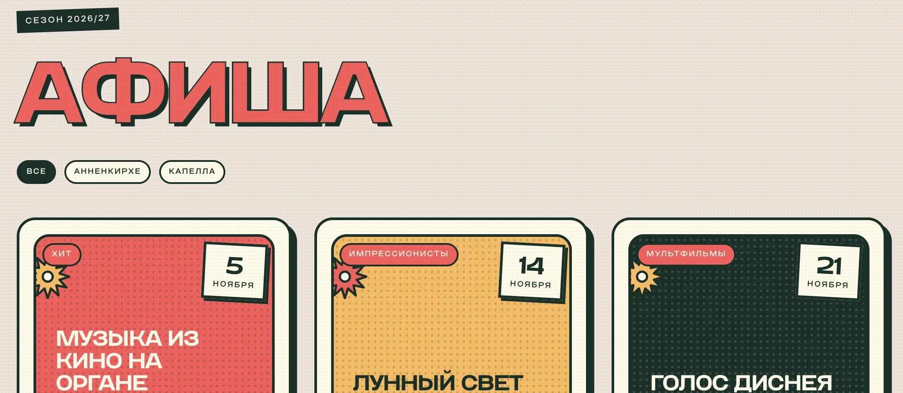
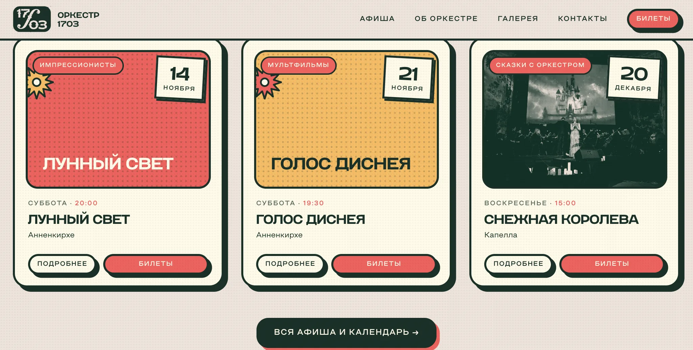
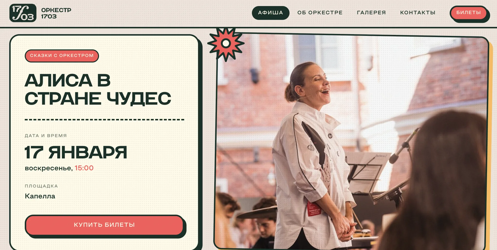
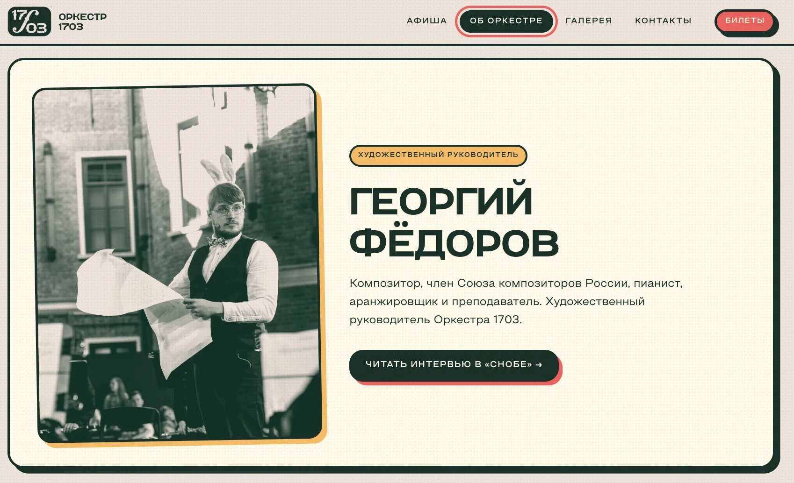
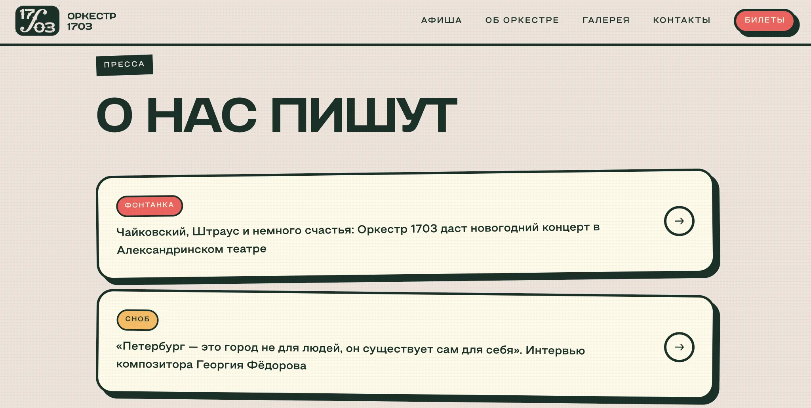
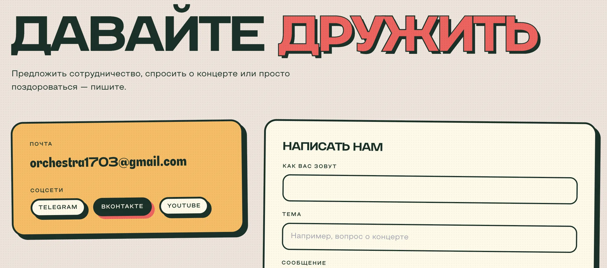

№ 002 · ORCH1703.HTML
Оркестр 1703: первый сайт
Первый собственный сайт оркестра: афиша, билеты и характер «самого дружелюбного оркестра»
- Роль
- Дизайн, UX, тексты интерфейса и вёрстка
- Инструменты
- Figma, HTML, CSS, JavaScript
01 Контекст и цели
Оркестр 1703 из Санкт-Петербурга, художественный руководитель — композитор Георгий Фёдоров. Это первый собственный сайт оркестра.
Раньше вся информация жила в соцсетях, потом её собрали в Taplink. Но Taplink почти не работал: через него приходило около 5% переходов. Половина зрителей приходила из ВКонтакте, остальные — из Instagram, Google и сторонних афиш. Taplink — это список ссылок без визуала, без характера оркестра и без нормальной афиши, а чтобы купить билет, нужно было пролистать посты или перейти по нескольким ссылкам.
Вывод: оркестру нужна своя площадка, куда можно вести людей из всех каналов сразу, — с афишей и покупкой билета в один-два клика.
02 Задача
Собрать афишу, информацию об оркестре и покупку билетов в одном месте так, чтобы до билета был один-два клика, и при этом передать характер оркестра: классика с юмором и «бескомпромиссной подачей».
03 Концепция и визуальный стиль
Голос бренда — «Самый дружелюбный оркестр». Он звучит везде: от первого экрана до контактов «Давайте дружить» и «Есть вопрос или идея?».
Визуальный язык — афишная ретро-типографика: широкий гротеск, жирные обводки, смещённые тени, полутоновый растр и звезда-штамп. Та же палитра, что у теста «Кто ты из мира музыки?», поэтому сайт и спецпроект выглядят как одна семья.
Цвет
- Глубокий зелёный#1A3029 — текст, обводки, тени
- Коралловый#EC6762 — билеты и главные действия
- Горчичный#F4BB66 — акценты, хит сезона
- Крем#FFFCF5 — карточки
04 Ключевые UX/UI-решения
Ближайший концерт — сразу
На первом экране карточка ближайшего концерта с датой, временем и площадкой. Один клик — и вы на странице концерта.
Билеты всегда под рукой
Коралловая кнопка «Билеты» закреплена в шапке и повторяется на каждой карточке концерта. Коралловый цвет на сайте означает только одно: купить билет.
Все даты хита — в одном месте
У концерта, который идёт много раз, даты показаны чипами прямо на карточке, лишние сворачиваются в «Ещё 3». Не нужно искать нужный день по всей афише.
Фильтр по площадкам
Оркестр играет в Анненкирхе и Капелле. Фильтр сразу показывает концерты нужной площадки — важно для тех, кому удобнее добираться в одно место.
Страница концерта
Дата, время, площадка, длительность и возраст — крупно и в одном блоке, кнопка покупки рядом. Все ответы до того, как человек уйдёт на сайт билетного оператора.
Доверие
Публикации в «Фонтанке» и «Снобе» и рассказ о художественном руководителе: для нового зрителя это аргумент выбрать именно этот оркестр.
Связаться без лишних шагов
Форма обратной связи, почта и соцсети на одном экране: и для зрителей с вопросом о концерте, и для партнёров.
05 Экраны, макеты и адаптив














06 Реализация
- Свой домен orchestra1703.com и собственный хостинг.
- На первом экране — видео с концертов вместо статичной фотографии: оркестр сразу виден «живым».